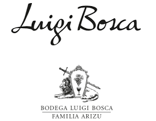
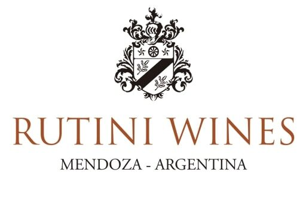
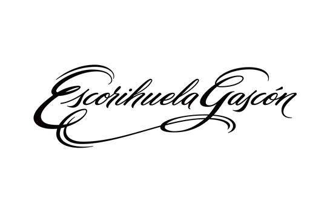

BODEGA LUIGI BOSCA
Bodega creada en 1890 por la familia Arizu, a dia de hoy es uno de los vinos mas reconocidos a nivel nacional e internacional con gran variedad de cepas.
- Luigi Bosca Varietal
- Luigi Bosca de Sangre

RUTINI WINES
Rutini Wines se convierte en 1925 en la primera bodega en plantar viñedos en el Valle de Uco, reconocido hoy en el mundo como una de las principales regiones vitivinícolas de Mendoza y de toda Argentina
- Rutini
- Trumpeter
BODEGA SALENTEIN
Salentein llego a la region en 1996 y hoy exporta vinos a mas de 40 paises.
- Killka
- Portillo
- Salentein reserva
- Salentein primus
MOSQUITA MUERTA WINES
Mosquita Muerta Wines nace en 2009, como una colección excepcional e inimitable de Blends Premium del Valle de Uco y Luján de Cuyo, con una historia cautivante detrás de cada etiqueta.
- Cordero con piel de lobo
- Perro Callejero
- Sapo de otro pozo
- Pispi
- Mosquita muerta

BODEGA ESCORIHUELA GASCON
Fundada en 1884 con el compromiso de elaborar los vinos que representan a la Argentina en el mundo por su elegancia y calidad.
- Familia Gascon
- Escorihuela gascon
- MEG
- The president blend